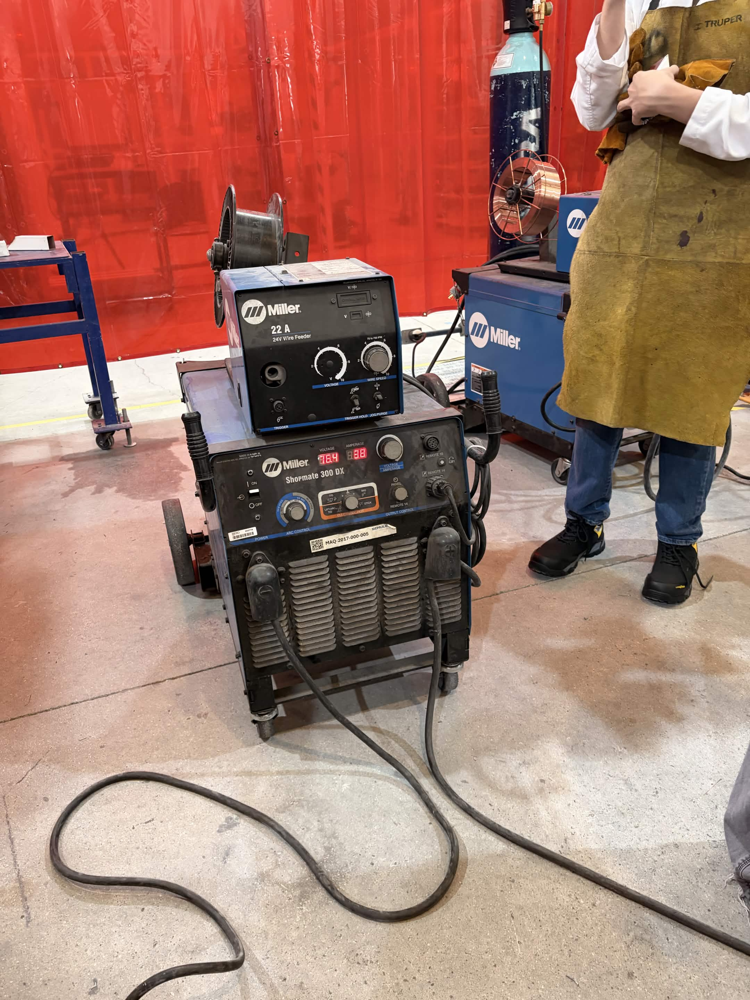
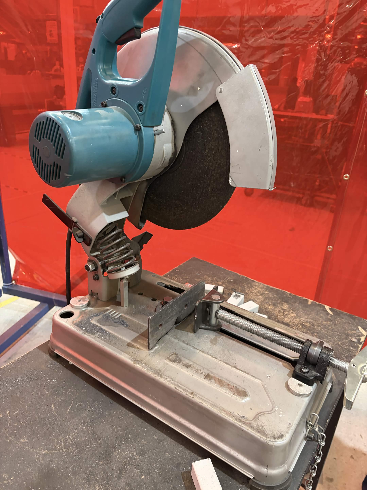
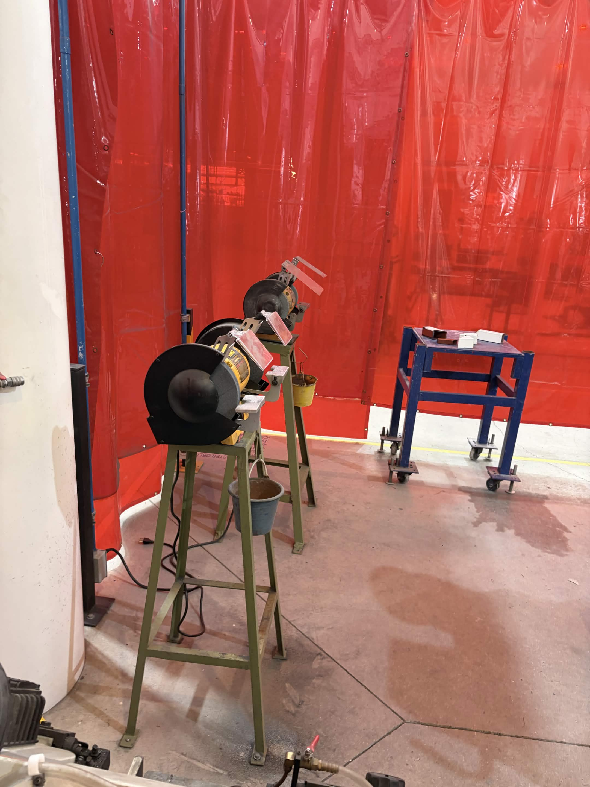
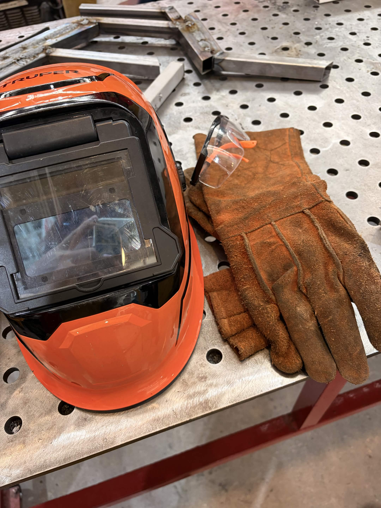
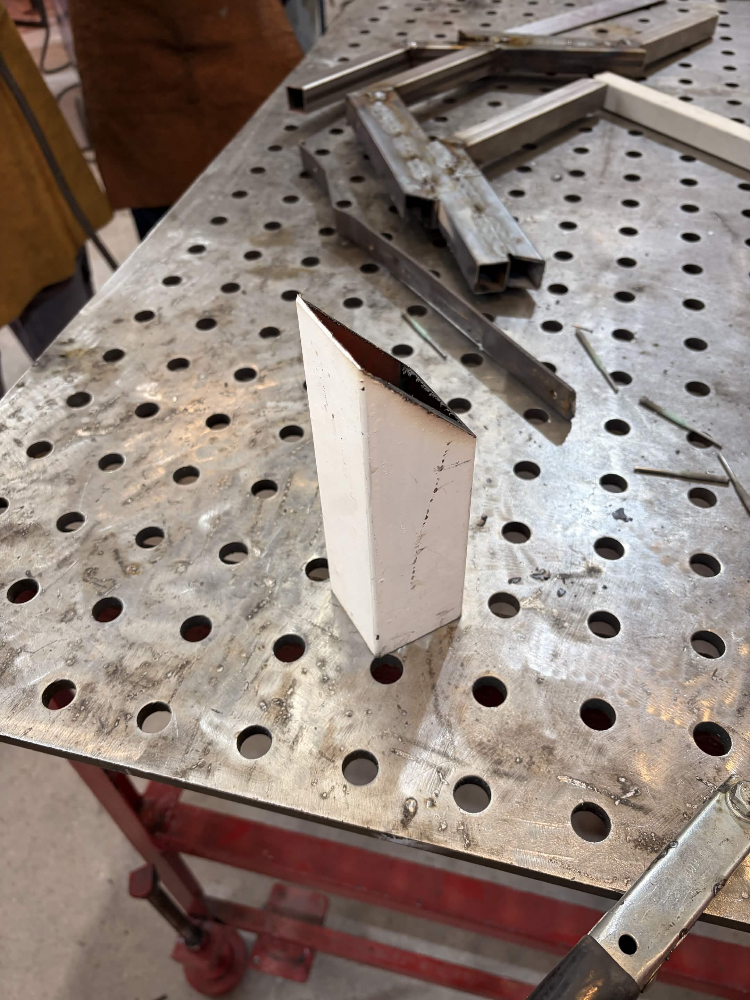
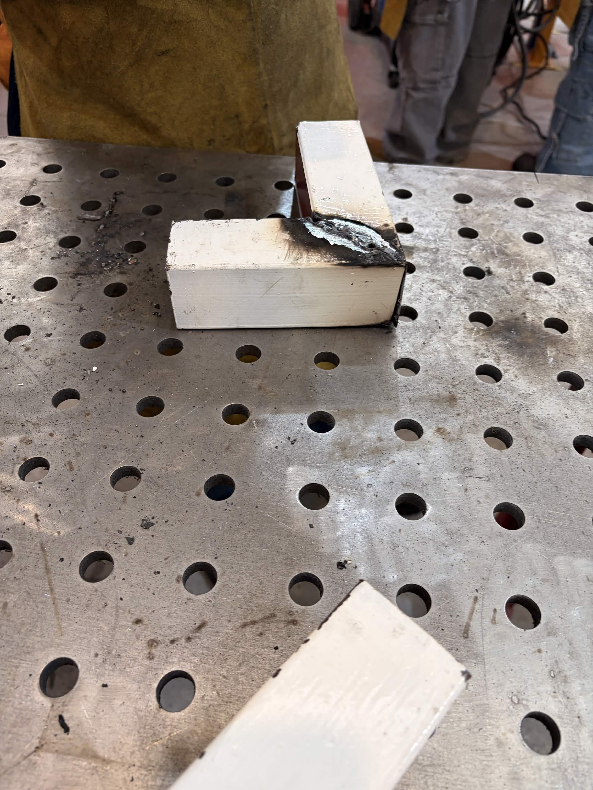

1. Introducción y Contexto
La manufactura y el ensamblaje físico representan etapas críticas en el desarrollo de sistemas mecatrónicos funcionales. Durante esta segunda semana de actividades, el enfoque principal consistió en llevar los diseños virtuales del plano digital a la realidad mediante el uso de herramientas de corte, preparación de perfiles y procesos de unión por soldadura.
Comprender el funcionamiento técnico de las máquinas de soldar, los equipos de corte abrasivo y las medidas de seguridad industrial es indispensable para garantizar la integridad estructural de los prototipos y salvaguardar la integridad física del operador en el entorno de taller.
2. Maquinaria, Funcionamiento Operativo y Evidencias
Durante la sesión práctica de taller se emplearon equipos especializados para el corte, habilitado y unión de los componentes metálicos del prototipo:
2.1 Soldadora Industrial (Modelo Miller) y su Funcionamiento
Esta máquina opera mediante el proceso de soldadura por arco eléctrico con gas protector (MIG/MAG). Su principio se basa en generar un circuito eléctrico de alta corriente y bajo voltaje entre la pieza de trabajo y un alambre electrodo continuo que se alimenta de forma automática. Al acercar el alambre al metal base, se crea un arco eléctrico intenso que funde ambos materiales al instante. Simultáneamente, la máquina libera un flujo constante de gas inerte o activo desde un tanque externo para rodear la zona de fusión, evitando que el oxígeno y la humedad del aire contaminen el cordón y provoquen porosidades estructurales.

2.2 Sierra Sensitiva de Corte Rápido (Tronzadora)
Este equipo funciona mediante un motor eléctrico de alta potencia que hace girar a gran velocidad un disco de corte abrasivo (compuesto de resina y granos de óxido de aluminio o circonio). El operador sujeta firmemente el perfil metálico en la mordaza de la sierra y acciona el brazo móvil hacia abajo. El disco interactúa por fricción y alta velocidad contra el metal, desgastando y seccionando el material de manera limpia a lo largo de la línea de trazo deseada, permitiendo además realizar cortes precisos a diferentes ángulos (ingletes).

2.3 Esmeril de Banco y Mesas de Trabajo
El esmeril de banco utiliza dos muelas abrasivas giratorias para desbastar rebabas, filos y preparar los bordes de las piezas soldadas. Por su parte, las mesas metálicas perforadas proveen una superficie firme y perfectamente nivelada con matrices de agujeros para fijar escuadras y alinear componentes con exactitud milimétrica.

3. Medidas de Seguridad y Equipo de Protección Personal (Safety)
El cumplimiento estricto de los protocolos de seguridad industrial es obligatorio en el taller para prevenir accidentes por quemaduras, radiación o proyección de partículas:
- Careta de Soldar: Protege los ojos y el rostro de la radiación ultravioleta (UV) e infrarroja (IR) emitida por el arco eléctrico, además de evitar lesiones por chispas o salpicaduras de metal fundido.
- Guantes de Carnaza: Fabricados con piel gruesa y resistente al calor extremo, protegen las manos de quemaduras al manipular piezas calientes, rebabas filosas o al operar los equipos de unión.
- Mandil de Protección y Ropa Adecuada: Evita que las chispas y el calor directo alcancen el cuerpo o la ropa de calle, reduciendo drásticamente el riesgo de quemaduras en el torso y extremidades.
- Gafas de Seguridad y Protección Ocular: Se utilizan de forma obligatoria durante las labores de corte con sierra sensitiva y esmerilado para evitar el ingreso de partículas o virutas metálicas a los ojos.
Evidencia del Equipo de Protección (Safety)
Se muestra el equipo completo listo para su uso seguro antes de comenzar las prácticas en el taller.

4. Análisis de Piezas Cortadas y Soldadas
Como resultado físico del proceso de habilitado, trazo y unión en el taller, se obtuvieron las siguientes piezas:
4.1 Perfil Metálico Cortado a Ángulo
Muestra un tramo de perfil tubular cortado con precisión utilizando la sierra sensitiva. Este tipo de corte permite realizar acoplamientos limpios y esquinas embonadas para estructuras mecánicas estables.

4.2 Ensamblaje y Unión en Ángulo con Soldadura
Se observa el resultado de la unión de dos perfiles metálicos posicionados en escuadra mediante el proceso de soldadura MIG. El cordón depositado en la junta garantiza la rigidez estructural y la firmeza del ensamble final del proyecto.

5. Conclusiones
La práctica demuestra que la calidad de un ensamble mecatrónico no solo depende de un buen diseño virtual, sino también de comprender a fondo el comportamiento físico los materiales y el funcionamiento de la maquinaria de corte y soldadura. El respeto a las normas de seguridad asegura un flujo de trabajo eficiente y libre de riesgos en el entorno de manufactura.
6. Fuentes de Información
Los fundamentos sobre procesos de unión, soldadura, tecnología de materiales y seguridad industrial se respaldan en la siguiente literatura especializada:
- Groover, M. P. (2010). Fundamentals of Modern Manufacturing: Materials, Processes, and Systems. Wiley.
- American Welding Society (AWS). (2020). Welding Handbook: Welding Processes. AWS.
- Kalpakjian, S., & Schmid, S. R. (2014). Manufactura, ingeniería y tecnología. Pearson Educación.